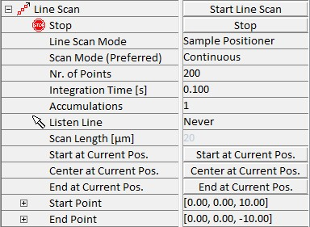

|
线扫描
|
线扫描参数组允许调整沿可定义直线收集数据所需的所有参数。它允许沿该线收集 光谱 或 距离曲线（在相应部分调整参数）。可以使用以下参数定义线扫描的行为。

开始线扫描
按下此按钮使用当前输入的参数开始线扫描和数据采集。
线扫描模式
扫描台
此模式使用压电台进行移动。
样品定位器
此模式使用电动台进行移动。
样品定位 + 形貌校正
此模式使用电动台结合记录的形貌进行移动以确定 Z 位置。请参阅 形貌校正。
扫描模式（首选）
线扫描的运动可以是连续的或步进的。如果无法连续运动，测量将自动切换到步进模式。当使用扫描台移动样品或将采集力距离曲线时就是这种情况。在连续模式下，累积次数始终等于 1。
点数
此参数定义沿线的等距点数量，将在这些点进行测量。
积分时间 [s]
此参数定义光谱采集的积分时间。
累积次数
此参数定义累积次数。此参数仅用于步进模式下的光谱采集。
监听 线
使用此功能，可以通过在任何采集的图像中单击或绘制来定义起始位置、结束位置或中心位置。
扫描长度 [µm]
只读值，显示要测量的线的长度。
起始于当前位置
使用当前位置作为起始点。
中心位于当前位置
使用当前位置作为中心点。
终止于当前位置
使用当前位置作为结束点。
起始点
此参数组包含线扫描起始点的三个坐标 X、Y 和 Z（单位为 µm）的参数。请注意，扫描台执行线扫描。
结束点
此参数组包含线扫描结束点的三个坐标 X、Y 和 Z（单位为 µm）的参数。
在每个点
此处用户可以定义在每个点应执行哪些操作。可以选择距离曲线和单光谱（是或否选择）。如果选择了其中任何一个，则相应参数组中设置的参数值将用于相应的任务。如果两个任务都被选中，它们将按顺序执行。